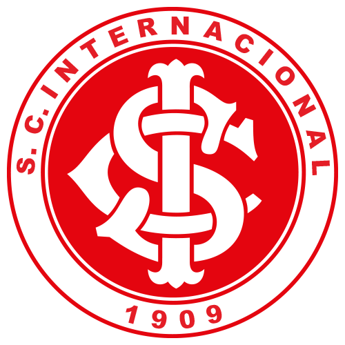

O Grêmio Foot-Ball Porto Alegrense, conhecido como Grêmio, foi fundado em 15 de
setembro de 1903, em Porto Alegre, Rio Grande do Sul. O clube nasceu da ideia de um grupo
de jovens que queria promover o futebol na cidade. O Grêmio rapidamente se destacou,
conquistando seu primeiro Campeonato Gaúcho em 1910.
A partir da década de 1980, o Grêmio alcançou notoriedade nacional e internacional,
conquistando a Copa do Brasil em 1989 e a Copa Libertadores em 1983 e 1995. O clube é
conhecido por sua forte tradição de formação de jogadores e por ter revelado grandes talentos
ao longo dos anos, como Ronaldinho Gaúcho e Lucas Leiva.
Nos últimos anos, o Grêmio continuou a ser uma força no futebol brasileiro, com novas
conquistas, incluindo mais títulos da Copa do Brasil e outra edição da Libertadores em 2017.
Curiosidades:
Estádio Arena do Grêmio: O Grêmio manda seus jogos na Arena do Grêmio, inaugurada em
2012. O estádio é um dos mais modernos do Brasil e possui capacidade para mais de 55 mil
torcedores.
Rivalidade Clássica: O Grêmio tem uma intensa rivalidade com o Internacional, conhecida
como "Grenal". Esses confrontos são sempre esperados com grande expectativa e são uma
das maiores rivalidades do futebol brasileiro.
